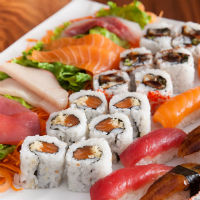
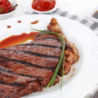

"You are what you eat." - Matt Goad

Favorite Casual Dining Spot:
Sushi Ai
Sushi Ai is Matt's favorite restaurant not in St. Louis, but pretty much the World. Sushi Ai offers an all-you-can-eat sushi and appetizers special
everyday of the week. Further on Sundays at Sushi Ai, the all-you-can-eat-special is buy-one-get-one fifty percent off. I recommend the tuna roll,
the gyoza, and the shrimp shumai.

Favorite Fine Dining Spot:
Cafe Napoli
While Matt has only been to Cafe Napoli once, he insists that it was one of the finest dining experiences in his short life. They Cafe served an
extensive menu yet provided the specilization to fit anyone's unique dining desires. Matt had the Delmonico Steak, cooked rare, with the bone-in. The
table shared a series of sides ranging from potatoes to asparagus. Thankfully, Matt did not have to pick up the bill.
Favorite Drinking Spot:
Mike Humphrey's
Mike Humphrey's is the spot to be on Wednesday Nights. On Wednesday's Humphrey's offers their notorious penny-pitchers deal. Starting at 11pm, Humphrey's
offers pitchers of the lowest-quality drafts for a mere dollar to anyone of age. While there is a $3 dollar cover at the door, Humphrey's gurantees a great
drunken time at a low cost. This location is perfect for college students.
Who is Matt Goad?
Matt Goad is a near professional eater and drinker. Matt tends to treat every
meal like Thanksgiving. Matt reguraly eats a gluttonous amount of food & drink and wishes
to shares his favorite places to indugle in St. Louis.